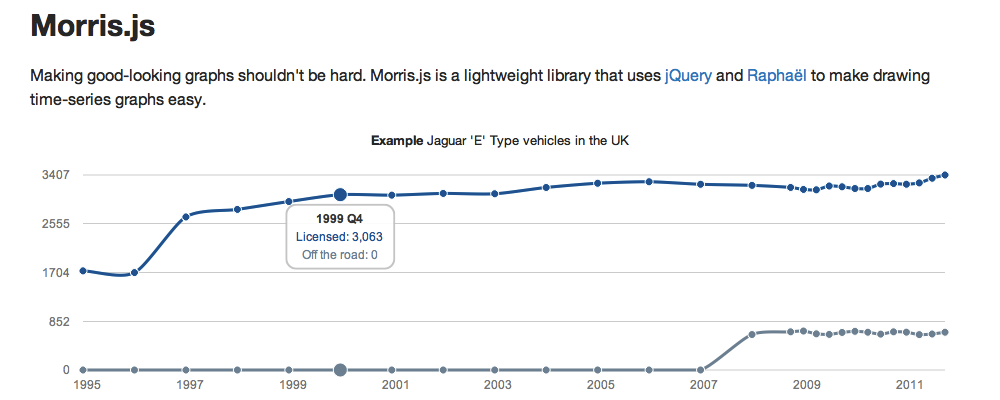
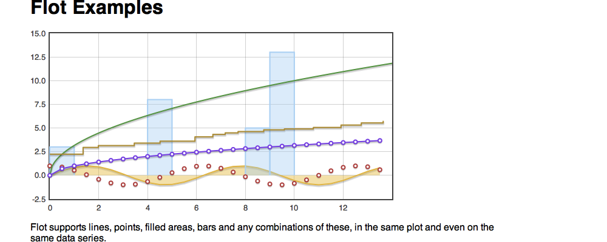
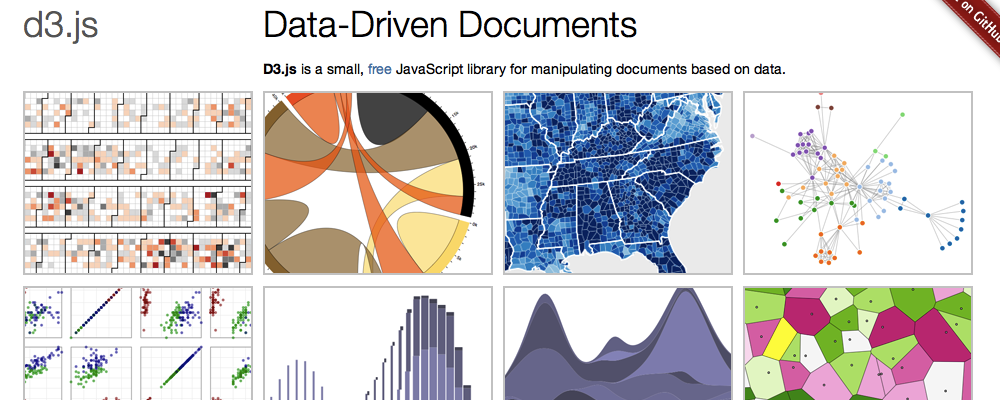

Me
Web developer, 10+ years JS experience, 6 years Ruby.
Trained as a Typographer.
Matt Patterson
Constituent Parts
Web developer, 10+ years JS experience, 6 years Ruby.
Trained as a Typographer.
Data dashboard showing what Birmingham residents are contacting the council about.
The data comes from their call centres
It's updated every day
A Rails app, deployed on Heroku, using MySQL and MongoDB on the back end. Lots of JS on the front: jQuery, Raphaël...
Dmitry Baranovskiy’s Javascript vector drawing library.
Presents a single API, but uses either VML (IE), or SVG (everything else).
Raphaël even works in IE 6. IE 6!
Specific libraries, like Morris.js for plotting time-series line graphs:

More general libraries, like Flot, a jQuery plugin:

Libraries, like D3, which are very powerful but don't work in older browsers:

Has documentation.
If you know what you're looking for, it's pretty good.
// Creates canvas 320 × 200 at 10, 50
var paper = Raphael(10, 50, 320, 200);
// Creates circle at x = 50, y = 40, with radius 10
var circle = paper.circle(50, 40, 10);
// Sets the fill attribute of the circle to red (#f00)
circle.attr("fill", "#f00");
// Sets the stroke attribute of the circle to white
circle.attr("stroke", "#fff");
paper.path("M10,10 L90,90");
// draw a diagonal line:
// move to 10,10, line to 90,90
paper.path("M10,10 C50,60 50,50 90,100 90,90")
// draw a curve
// move to 10,10, cubic bezier curve to 90,90
// passing through 50,50
paper.text(50, 50, "Raphaël\nwrites\ntext");
// text (\n for newlines...)
<polyline> element as well as a <path> element, but Raphaël hides it all behind .path()
Official graphing library for Raphaël.
paper.path("M10,10 L90,90");
var r = Raphael(10, 50, 640, 480);
// Creates pie chart at with center at 320, 200,
// radius 100 and data: [55, 20, 13, 32, 5, 1, 2]
r.piechart(320, 240, 100, [55, 20, 13, 32, 5, 1, 2]);
The docs suck.
(However, it does have some nice label primitives.)
You need to start with the data. What you're trying to present really needs to govern how you present it.
Bad examples are fun.
| Thing | Value |
|---|---|
| Car | 16 |
| Bus | 15 |
| Bike | 14 |
| Train | 13 |
| Pedalo | 12 |
| Foot | 14 |
| Kite | 15 |
| Thing | Value |
|---|---|
| Car | 15 |
| Bus | 15 |
| 2000 | 2001 | 2002 | 2003 | 2004 | 2005 | 2006 | 2007 | 2008 | 2009 | ||
|---|---|---|---|---|---|---|---|---|---|---|---|
| El Salvador | 3446.5 | 3446.5 | 2699.7 | 3216.7 | 3733.7 | 3561.4 | 3733.7 | 3274.1 | 2986.9 | 4078.3 | 4078.3 |
| USA | 17137.6 | 17449.1 | 17449.1 | 17760.7 | 17137.6 | 17449.1 | 17760.7 | 17449.1 | 16826.0 | 15579.6 | 15579.6 |
| Deutschland | 1021.3 | 931.4 | 955.9 | 866.0 | 866.0 | 866.0 | 800.7 | 751.7 | 719.0 | 702.6 | 702.6 |
| 2000 | 2001 | 2002 | 2003 | 2004 | 2005 | 2006 | 2007 | 2008 | 2009 | ||
|---|---|---|---|---|---|---|---|---|---|---|---|
| El Salvador | 60 | 60 | 47 | 56 | 65 | 62 | 65 | 57 | 52 | 71 | 71 |
| USA | 5.5 | 5.6 | 5.6 | 5.7 | 5.5 | 5.6 | 5.7 | 5.6 | 5.4 | 5.0 | 5.0 |
| Deutschland | 1.25 | 1.14 | 1.17 | 1.06 | 1.06 | 1.06 | 0.98 | 0.92 | 0.88 | 0.86 | 0.86 |
There’s a pretty good article over at Smashing Magazine about bad charts and graphs.
Dynamic charts make the problems much harder to deal with.
There are several basic components:
var p = paper.path();
Attributes of the path are set with attr(), e.g. p.attr({fill: "blue"}).
Terrifyingly, the SVG path spec is your friend here.
Moves, Lines, Curves (& closing paths)
It's a lot like PostScript (or Logo)
var c = paper.circle();
var r = paper.rect();
attr(), and the majority of other functionality, comes from Element
It's a very sensible, and powerful thing: Almost everything can be operated on in the same way.
Sets make use of that.
A set is a bit like an Array or Hash. The magic is that you can call Element methods on it, and those methods will be applied to all its members.